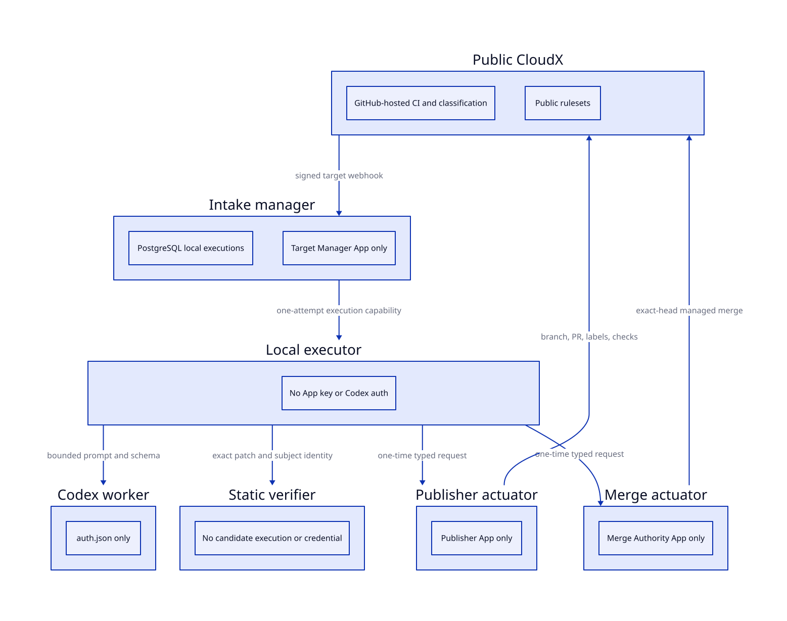

CloudX Local AI Controller V4
1 Decision
CloudX V4 uses a locally logged-in Codex account because the owner explicitly rejected API-key authentication. OpenAI’s account-auth automation guide says not to use this workflow for public or open-source repositories. V4 therefore fails closed unless the operator records the explicit risk acceptance. The controls below reduce repository and host exposure; they do not make this use officially supported.
Privileged AI execution moves out of GitHub Actions. Public CloudX keeps GitHub-hosted CI, classification, and free public-repository rulesets. A private source repository supplies reviewed controller code, but the host’s root-owned exact SHA and source digest are the runtime trust anchor.

3 Execution Contract
- The manager creates one deduplicated execution bound to the target identity, controller commit, controller source digest, and bounded payload.
- One executor claims the execution once, heartbeats its lease, and moves it through fixed controller-owned stages.
- An expired claimed or running lease becomes uncertain and requires explicit operator recovery; it is never automatically retried.
- Managed publication is bound to a canonical post-verification artifact; candidate code executes only later in public GitHub-hosted CI.
- Publisher and Merge actuators independently validate typed one-time requests and re-fetch the current subject before acting.
A current writer authorizes the exact issue revision or pull request head before any account-authenticated model work is queued.
V4 enables managed generated-change automerge. Actorless ordinary and protected-manual merge requests are rejected until manager admission durably binds the authorizing human identity.
4 Activation And Migration
Setup accepts one explicit reviewed 40-character controller commit and canonical source digest. It installs a root-owned release, records an append-only local ledger, and starts hardened service users and sockets. It configures the three public-target Apps and CloudX public rulesets. It also verifies that the private repository has no Actions runner, workflow, secret, variable, or environment authority. A private tag is informational, not a trust root.
The V4 migration refuses to switch while any V3 workflow execution or registration state is active or ambiguous. Operators resolve those records first. Terminal V3 audit history remains read-only; V4 does not add a compatibility execution path.
5 Proof Status
Repository tests, migration integration, static systemd verification, Compose checks, coverage, security review, and exact pushed commits are required before release. Account-authenticated live probes are a separate attended gate after explicit risk acceptance. Until those probes pass, V4 is implemented but not activated.
6 Source Gaps
6.1 live_v4_activation
Missing claim: V4 is installed and has completed account-authenticated generation, review, verification, publication, and exact-head merge probes on the live host.
Why missing: Implementation and deterministic verification precede attended host activation. The account-authenticated live probes require explicit owner risk acceptance and must not run as part of ordinary repository tests.
Needed source: Installed-service isolation probes, two serialized logged-in Codex jobs, cancellation and no-network verifier probes, read-only GitHub retirement inspection, and a disposable exact-head end-to-end run.
Blocks output: false